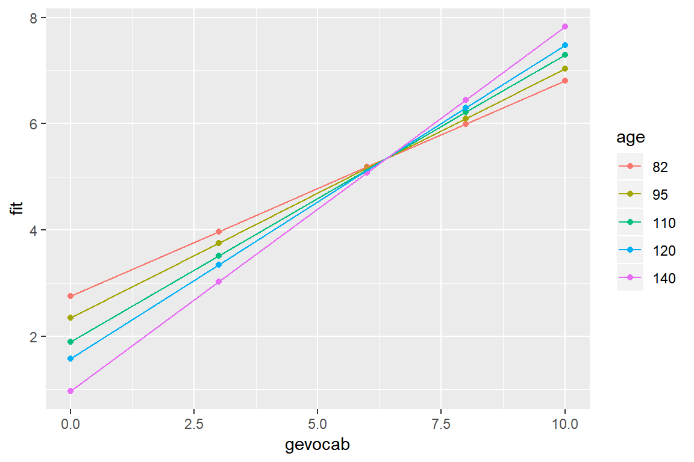
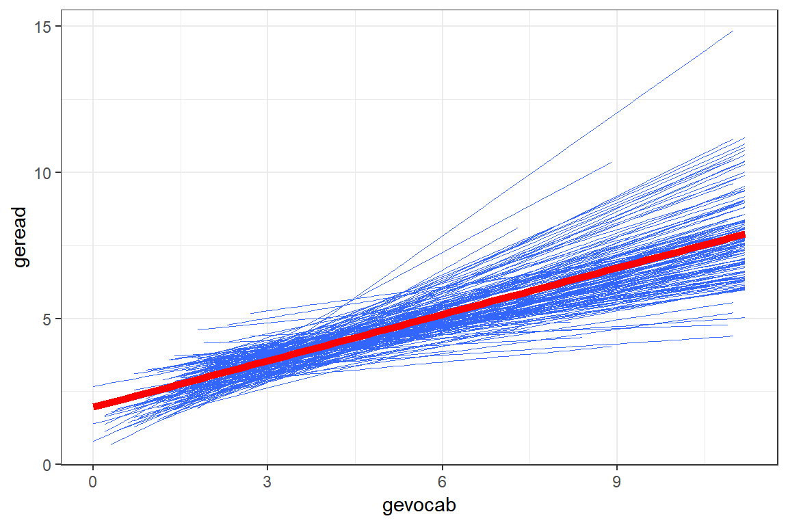
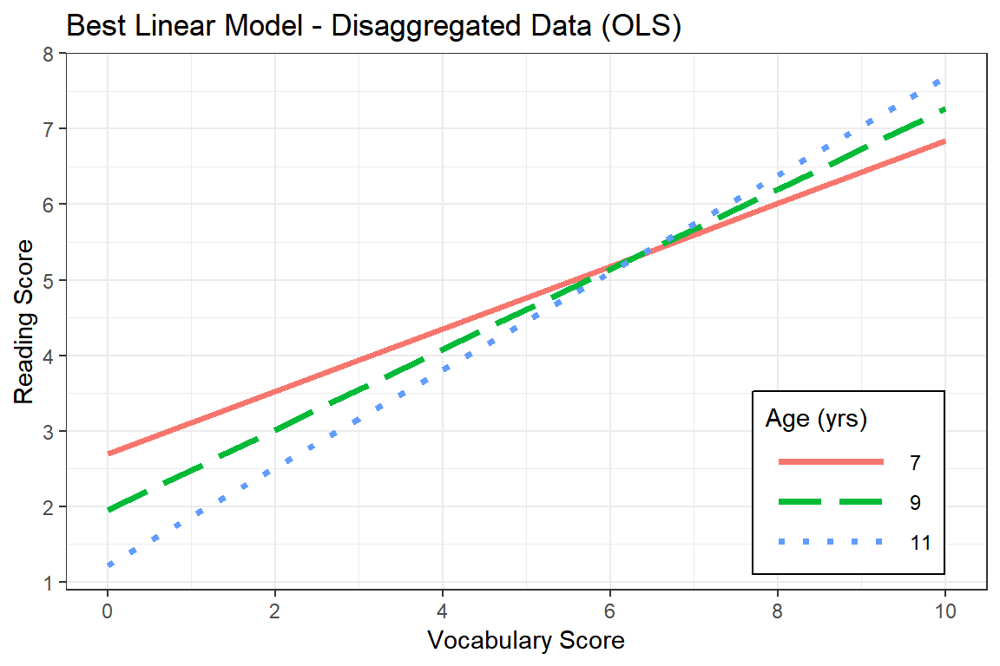
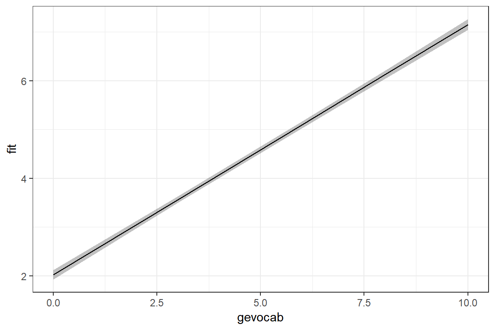
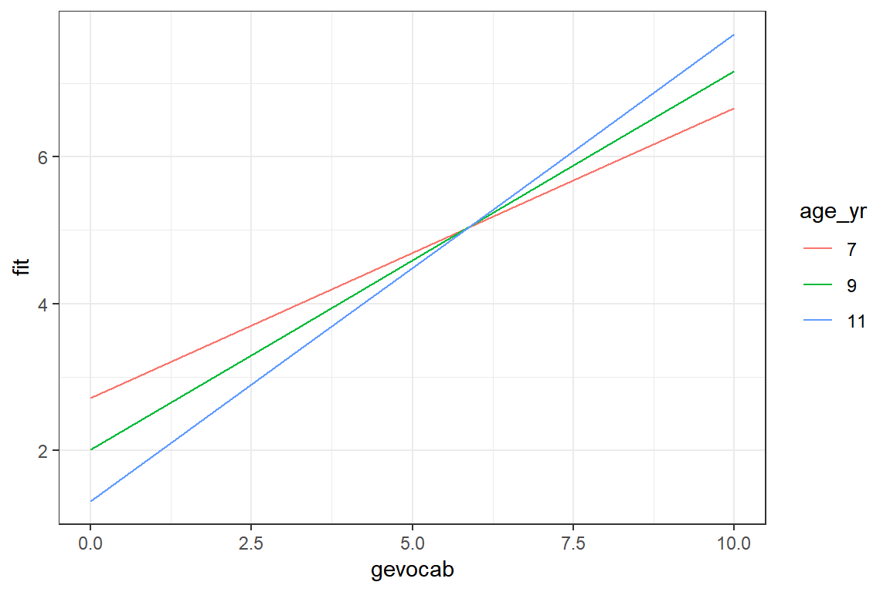
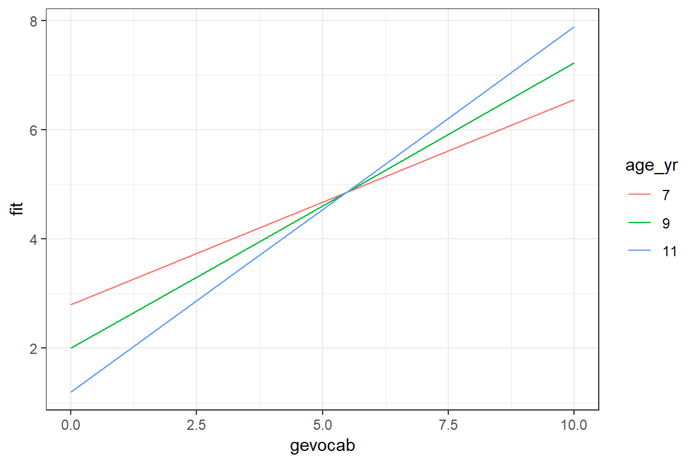
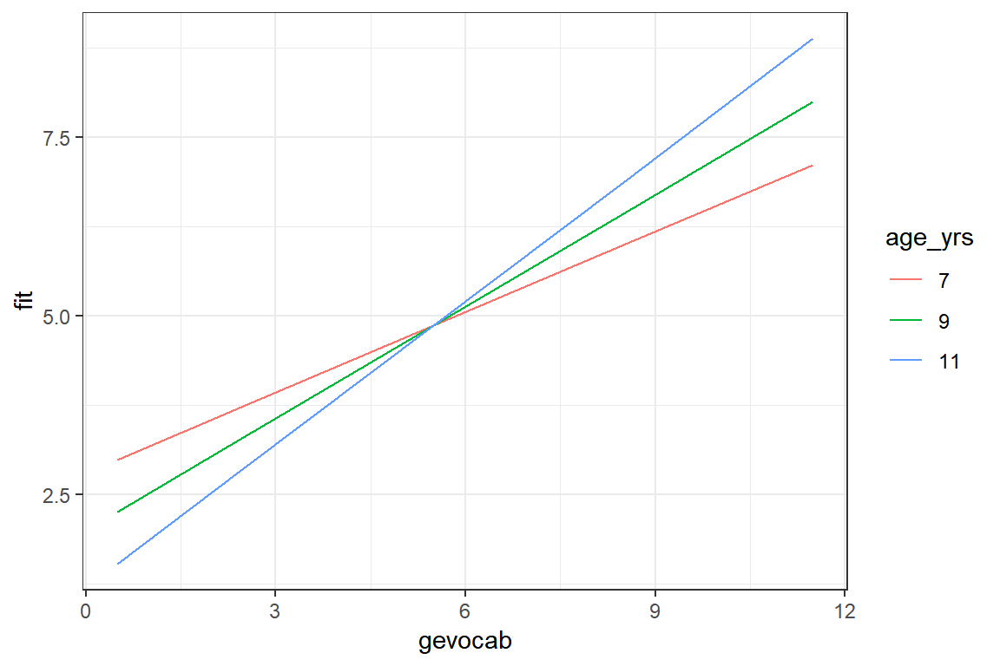

4 Example - Achievement
library(tidyverse)
library(haven) # read in SPSS dataset
library(furniture) # nice table1() descriptives
library(stargazer) # display nice tables: summary & regression
library(texreg) # Convert Regression Output to LaTeX or HTML Tables
library(RColorBrewer) # nice color palettes for plots
library(gridExtra) # place ggplots together as one plot
library(psych) # contains some useful functions, like headTail
library(car) # Companion to Applied Regression
library(nlme) # non-linear mixed-effects models
library(lme4) # Linear, generalized linear, & nonlinear mixed models
library(lmerTest) # Tests on lmer objects
library(HLMdiag) # Diagnostic Tools for for nlme & lmer4
library(sjstats) # ICC calculations
library(optimx) # Different optimizers to solve mlm's
library(effsize) # effect size computations
library(lsr) # companion to learning stats with R4.1 Background
Finch textbook…
The datasets for this textbook may be downloaded from the website: http://www.mlminr.com/data-sets/. I was unable to find any documentation on this dataset in the book or online, so I contacted the authors. There were unable to provide much either, but based on visual inspection designated the class of factor to thoes vairables that seem to represent categorical quantities. The labels for gender and class size are relative to the frequencies in the journal article the authors did point me to (although the samples sizes do not match up).
Read the SPSS data in with the haven package .
data_raw <- haven::read_sav("http://www.mlminr.com/data-sets/Achieve.sav?attredirects=0")Declare all categorical variables to be factors and apply labels where meaningful.
Student-specific
* gender = Male or Female * age = Age, in months * gevocab = Vocabulary Score * geread = Reading Score
Class-specific * classsize = category of class’s size
School-specific * senroll = school enrollment * ses = school’s SES level
data_achieve <- data_raw %>%
dplyr::mutate_at(vars(id, region, corp, school, class), factor) %>%
dplyr::mutate(gender = gender %>%
factor(labels = c("Female", "Male"))) %>%
dplyr::mutate(classize = classize %>%
factor(labels = c("12-17", "18-21",
"22-26", ">26"))) %>%
dplyr::select(id, region, corp, school, class, # Identifiers
gender, age, geread, gevocab, # Pupil-level vars
classize, # Class-Level vars
senroll, ses) # School-level vars4.1.1 Sample Structure
It is obvious that the sample is hiarchical in nature. The nesting starts with students (level 1) nested within class (level 2), which are further nested within school (level 3), corp (level 4), and finally region (level 5).
For this chapter we will only focus on two levels: students are the units on which the outcome is measured and schools are the units in which they are nested.
The number of regions = 9:
num_regions <- data_achieve %>%
dplyr::group_by(region) %>%
dplyr::tally() %>%
nrow()
num_regions[1] 9The number of corps = 60:
num_corps <- data_achieve %>%
dplyr::group_by(region, corp) %>%
dplyr::tally() %>%
nrow()
num_corps [1] 60The number of schools = 160
num_schools <- data_achieve %>%
dplyr::group_by(region, corp, school) %>%
dplyr::tally() %>%
nrow()
num_schools[1] 160The number of classes = 568
num_classes <- data_achieve %>%
dplyr::group_by(region, corp, school, class) %>%
dplyr::tally() %>%
nrow()
num_classes[1] 568The number of students = 10320
num_subjects <- data_achieve %>% nrow
num_subjects[1] 103204.2 Exploratory Data Analysis
4.2.1 Summarize Descriptive Statistics
4.2.1.1 The stargazer package
Most posters, journal articles, and reports start with a table of descriptive statistics. Since it tends to come first, this type of table is often refered to as Table 1. The stargazer() function can be used to create such a table, but only for the entire dataset. I haven’t been able to find a way to get it to summarize subsamples and compare them in the standard format. Also, it only summarises continuous, not categorical variables.
data_achieve %>%
dplyr::select(classize, gender, geread, gevocab, age) %>%
data.frame() %>%
stargazer::stargazer(header = FALSE,
title = "Summary of the numeric variables with `stargazer`",
type = "html")| Statistic | N | Mean | St. Dev. | Min | Pctl(25) | Pctl(75) | Max |
| geread | 10,320 | 4.341 | 2.332 | 0.000 | 2.800 | 4.900 | 12.000 |
| gevocab | 10,320 | 4.494 | 2.368 | 0.000 | 2.900 | 5.200 | 11.200 |
| age | 10,320 | 107.529 | 5.060 | 82 | 104 | 111 | 135 |
4.2.1.2 The furniture package
Tyson Barrett’s furniture package includes the extremely useful function table1() which simplifies the common task of creating a stratified, comparative table of descriptive statistics. Full documentation can be accessed by executing ?furniture::table1.
# note: the label for the table must be entered above, right after the "r"
table1(data_achieve,
geread, gevocab, age,
var_names = c("Reading Score",
"Vocabulary Score",
"Age (in months)"), # override names
splitby = ~ gender, # var to divide sample by
test = TRUE, # test groups different?
caption = "Summary of the numeric variables with `table1`",
output = "html")| Female | Male | P-Value | |
|---|---|---|---|
| n = 5143 | n = 5177 | ||
| Reading Score | 0.218 | ||
| 4.4 (2.3) | 4.3 (2.3) | ||
| Vocabulary Score | <.001 | ||
| 4.6 (2.4) | 4.4 (2.3) | ||
| Age (in months) | <.001 | ||
| 107.1 (5.0) | 107.9 (5.1) |
4.2.2 Visualization of Raw Data
4.2.2.1 Level One Plots: Disaggregate or ignore higher levels
For a first look, its useful to plot all the data points on a single scatterplot as displayed in the previous plot. Due to the large sample size, many points end up being plotted on top of or very near each other (overplotted). When this is the case, it can be useful to use geom_binhex() rather than geom_point() so the color saturation of the hexigons convey the number of points at that location, as seen in Figure .
Note: I had to manually install the package hexbin for the geom_hex() to run.
data_achieve %>%
ggplot() +
aes(x = gevocab,
y = geread) +
stat_binhex(colour = "grey85", na.rm = TRUE) + # outlines
scale_fill_gradientn(colors = c("grey80","navyblue"), # fill color extremes
name = "Frequency", # legend title
na.value = NA) + # color for count = 0
theme_bw()Figure 4.1: Density: Vocab vs. Reading
4.2.2.2 Multilevel plots: illustrate two nested levels
Up to this point, all investigation of this dataset has been only at the pupil level and any nesting or clustering within schools has been ignored. Plotting is a good was to start to get an idea of the school-to-school variability. This figure displays four handpicked school to illustrate the degreen of school-to-school variability in the association between vocab and reading scores.
data_achieve %>%
dplyr::filter(school %in% c(1321, 6181,
6197, 6823)) %>% # choose school numbers
ggplot(aes(x = gevocab,
y = geread))+
geom_count() + # creates points, size by overplotted number
geom_smooth(method = "lm") + # linear model (OLS)
facet_wrap(~ school) + # panels by school
theme_bw()
Another way to explore the school-to-school variability is to plot the linear model fit independently to each of the schools. This next figure displays only the smooth lines without the standard error bands or the raw data in the form of points or hexagons.
data_achieve %>%
ggplot(aes(x = gevocab,
y = geread)) +
geom_smooth(aes(group = school),
method = "lm",
se = FALSE, # do NOT want the SE bands
size = 0.3) +
geom_smooth(method = "lm",
se = FALSE,
color = "red", # do NOT want the SE bands
size = 2) + # make the lines thinner
theme_bw() 
Due to the high number of schools, the figure with all the school’s independent linear regression lines resembles a hairball and is hard to deduce much about individual schools. By using the facet_grid() layer, we can seperate the schools out so better see school-to-school variability. It also allows investigation of higher level predictors, such as the school’s SES (median split with ntile(var, 2)) and class size.
data_achieve %>%
dplyr::mutate(ses2 = ntile(ses, 2) %>% # median split
factor(labels = c("SES: Lower Half",
"SES: Upper Half"))) %>%
ggplot(aes(x = gevocab,
y = geread,
group = school)) + # sepearates students into schools
geom_smooth(method = "lm",
se = FALSE,
size = 0.3,
color = "black") +
theme_bw() +
facet_grid(classize ~ ses2) # makes seperate panels (rows ~ columns)
4.3 Single-Level Regression
4.3.1 Fit Nested Models
Ignore the fact that students are nested or clustered within school, is called dissagregating.
# linear model - ignores school (for reference only)
fit_read_lm_0 <- lm(formula = geread ~ 1, # intercept only
data = data_achieve)
fit_read_lm_1 <- lm(formula = geread ~ gevocab , # one predictor
data = data_achieve)
fit_read_lm_2 <- lm(formula = geread ~ gevocab + age, # two predictors
data = data_achieve)
fit_read_lm_3 <- lm(formula = geread ~ gevocab*age, # interation+main effects
data = data_achieve)Now compare the models:
texreg::htmlreg(list(fit_read_lm_0, fit_read_lm_1,
fit_read_lm_2, fit_read_lm_3),
digits = 3)| Model 1 | Model 2 | Model 3 | Model 4 | ||
|---|---|---|---|---|---|
| (Intercept) | 4.341*** | 1.961*** | 3.185*** | 5.283*** | |
| (0.023) | (0.042) | (0.416) | (0.870) | ||
| gevocab | 0.530*** | 0.528*** | 0.009 | ||
| (0.008) | (0.008) | (0.189) | |||
| age | -0.011** | -0.031*** | |||
| (0.004) | (0.008) | ||||
| gevocab:age | 0.005** | ||||
| (0.002) | |||||
| R2 | 0.000 | 0.289 | 0.290 | 0.290 | |
| Adj. R2 | 0.000 | 0.289 | 0.290 | 0.290 | |
| Num. obs. | 10320 | 10320 | 10320 | 10320 | |
| RMSE | 2.332 | 1.966 | 1.965 | 1.965 | |
| p < 0.001, p < 0.01, p < 0.05 | |||||
Assess the significance of terms in the last ‘best’ model
summary(fit_read_lm_3)
Call:
lm(formula = geread ~ gevocab * age, data = data_achieve)
Residuals:
Min 1Q Median 3Q Max
-6.2069 -1.1250 -0.4362 0.6041 8.6476
Coefficients:
Estimate Std. Error t value Pr(>|t|)
(Intercept) 5.282607 0.869769 6.074 1.3e-09 ***
gevocab 0.009154 0.189113 0.048 0.961394
age -0.030814 0.008066 -3.820 0.000134 ***
gevocab:age 0.004830 0.001759 2.746 0.006039 **
---
Signif. codes: 0 '***' 0.001 '**' 0.01 '*' 0.05 '.' 0.1 ' ' 1
Residual standard error: 1.965 on 10316 degrees of freedom
Multiple R-squared: 0.2902, Adjusted R-squared: 0.29
F-statistic: 1406 on 3 and 10316 DF, p-value: < 2.2e-16sjstats::r2(fit_read_lm_3)
R-Squared for Generalized Linear Mixed Model
R-squared: 0.290
adjusted R-squared: 0.290anova(fit_read_lm_3)Analysis of Variance Table
Response: geread
Df Sum Sq Mean Sq F value Pr(>F)
gevocab 1 16224 16223.9 4202.2783 < 2.2e-16 ***
age 1 34 33.7 8.7356 0.003128 **
gevocab:age 1 29 29.1 7.5419 0.006039 **
Residuals 10316 39827 3.9
---
Signif. codes: 0 '***' 0.001 '**' 0.01 '*' 0.05 '.' 0.1 ' ' 14.3.2 Visualize the Interaction
effects::Effect(focal.predictors = c("gevocab", "age"), # chooses defaul values for
mod = fit_read_lm_3) # continuous vars
gevocab*age effect
age
gevocab 82 95 110 120 140
0 2.755830 2.355243 1.893028 1.584884 0.9685969
3 3.971571 3.759370 3.514523 3.351291 3.0248284
6 5.187313 5.163497 5.136018 5.117699 5.0810599
8 5.997807 6.099582 6.217015 6.295304 6.4518809
10 6.808301 7.035667 7.298012 7.472909 7.8227019effects::Effect(focal.predictors = c("gevocab", "age"), # chooses defaul values for
mod = fit_read_lm_3) %>% # continuous vars
data.frame() %>%
mutate(age = factor(age)) %>% # must make a factor to seperate lines
ggplot(aes(x = gevocab,
y = fit,
color = age)) +
geom_point() +
geom_line() 
Here is a better version of the plot.
Age is in months, so we want multiples of 12 for good visualization
summary(data_achieve$age)/12 Min. 1st Qu. Median Mean 3rd Qu. Max.
6.833 8.667 8.917 8.961 9.250 11.250 effects::Effect(focal.predictors = c("gevocab", "age"),
mod = fit_read_lm_3,
xlevels = list(age = c(84, 108, 132))) %>%
data.frame() %>%
mutate(age_yr = factor(age/12)) %>%
ggplot(aes(x = gevocab,
y = fit,
color = age_yr,
linetype = age_yr)) +
geom_line(size = 1.25) +
theme_bw() +
labs(title = "Best Linear Model - Disaggregated Data (OLS)",
x = "Vocabulary Score",
y = "Reading Score",
linetype = "Age (yrs)",
color = "Age (yrs)") +
theme(legend.position = c(0.85, 0.2),
legend.key.width = unit(2, "cm"),
legend.background = element_rect(color = "black")) +
scale_linetype_manual(values = c("solid", "longdash", "dotted")) +
scale_x_continuous(breaks = seq(from = 0, to = 11, by = 2)) +
scale_y_continuous(breaks = seq(from = 0, to = 11, by = 1))
4.4 MLM - Step 1: Null Model, only fixed and random intercepts
A so called Empty Model only includes random intercepts. No independent variables are involved, other the grouping or clustering variable that designates how level 1 units are nested within level 2 units. For a cross-sectional study design this would be the grouping variables, where as for longitudinal or repeated measures designs this would be the subject identifier. This nested structure variable should be set to have class factor.
4.4.1 Fit the Model
fit_read_0ml <- lme4::lmer(geread ~ 1 + (1|school),
data = data_achieve,
REML = FALSE) # fit via ML (not the default)
fit_read_0re <- lme4::lmer(geread ~ 1 + (1|school) ,
data = data_achieve,
REML = TRUE) # fit = REML (the default)Compare the two models to OLS:
texreg::htmlreg(list(fit_read_lm_0, fit_read_0ml, fit_read_0re),
custom.model.names = c("OLS", "MLM-ML", "MLM-REML"),
caption = "NULL Model: different estimation methods",
digits = 4)| OLS | MLM-ML | MLM-REML | ||
|---|---|---|---|---|
| (Intercept) | 4.3408*** | 4.3068*** | 4.3068*** | |
| (0.0230) | (0.0548) | (0.0550) | ||
| R2 | 0.0000 | |||
| Adj. R2 | 0.0000 | |||
| Num. obs. | 10320 | 10320 | 10320 | |
| RMSE | 2.3319 | |||
| AIC | 46270.3388 | 46274.3058 | ||
| BIC | 46292.0643 | 46296.0313 | ||
| Log Likelihood | -23132.1694 | -23134.1529 | ||
| Num. groups: school | 160 | 160 | ||
| Var: school (Intercept) | 0.3885 | 0.3915 | ||
| Var: Residual | 5.0450 | 5.0450 | ||
| p < 0.001, p < 0.01, p < 0.05 | ||||
Notice that the estimate for the intercept is nearly the same in the linear regression and intercept only models, but the standard errors are quite different. When there is clustering in sample, the result of ignoring it is under estimation of the standard errors and over stating the significance of associations. This table was made with the screenreg() function in the self named package. I tend to prefer this display over stargazer().
4.4.2 Estimate the ICC
First, ask for the variance compenents:
lme4::VarCorr(fit_read_0re) %>%
print(comp = c("Variance", "Std.Dev"),
digits = 4) Groups Name Variance Std.Dev.
school (Intercept) 0.3915 0.6257
Residual 5.0450 2.2461 sjstats::re_var(fit_read_0re) Within-group-variance: 5.045
Between-group-variance: 0.392 (school)\[ \sigma^2_{u0} = 0.392 \\ \sigma^2_{e} = 5.045 \]
Intraclass Correlation (ICC) Formula \[ \overbrace{\rho}^{\text{ICC}} = \frac{\overbrace{\sigma^2_{u0}}^{\text{Random Intercept}\atop\text{Variance}}} {\underbrace{\sigma^2_{u0}+\sigma^2_{e}}_{\text{Total}\atop\text{Variance}}} \tag{Hox 2.9} \]
Then you can manually caluclate the ICC.
0.392 / (0.392 + 5.045)[1] 0.07209858Or you can use the icc() function in the sjstats package.
sjstats::icc(fit_read_0re)
Linear mixed model
Family : gaussian (identity)
Formula: geread ~ 1 + (1 | school)
ICC (school): 0.0720Note: On page 45 of the Finch textbook, the authors substituted standard deviations into the formula, rather than variances. The mistake is listed on their webpage errata (http://www.mlminr.com/errata).
4.5 MLM - Step 2: Add Lower-level explanatory variables, fixed, ML
Variance Component models (steps 2 and 3) - decompose the INTERCEPT variance into different variance compondents for each level. The regression intercepts are assumed to varry ACROSS the groups, while the slopes are assumed fixed (no random effects).
Fixed effects selection should come prior to random effects. You should use Maximum Likelihood (ML) estimation when fitting these models.
-
IF: only level 1 predictors and random intercepts are incorporated
- Then: MLM \(\approx\) ANCOVA .
4.5.1 Add pupil’s vocab score as a fixed effects predictor
fit_read_1ml <- lme4::lmer(geread ~ gevocab + (1|school),
data = data_achieve,
REML = FALSE) # to compare fixed var sig
fit_read_1re <- lme4::lmer(geread ~ gevocab + (1|school),
data = data_achieve,
REML = TRUE) # for R-sq calcstexreg::htmlreg(list(fit_read_0ml, fit_read_1ml),
custom.model.names = c("Null", "w Pred"),
digits = 3)| Null | w Pred | ||
|---|---|---|---|
| (Intercept) | 4.307*** | 2.023*** | |
| (0.055) | (0.049) | ||
| gevocab | 0.513*** | ||
| (0.008) | |||
| AIC | 46270.339 | 43132.432 | |
| BIC | 46292.064 | 43161.399 | |
| Log Likelihood | -23132.169 | -21562.216 | |
| Num. obs. | 10320 | 10320 | |
| Num. groups: school | 160 | 160 | |
| Var: school (Intercept) | 0.389 | 0.099 | |
| Var: Residual | 5.045 | 3.766 | |
| p < 0.001, p < 0.01, p < 0.05 | |||
4.5.1.1 Assess Significance of Effects
Likelihood Ratio Test (LRT)
Since models 0 and 1 are nested models, only differing by the the inclusion or exclusion of the fixed effects predictor gevocab, AND both models were fit via Maximum Likelihood, we can compare the model fit may be compared via the Likilihood-Ratio Test (LRT). The Likelihood Ratio value (L. Ratio) is found by subtracting the two model’s -2 * logLik or deviance values. Significance is judged by the Chi Squared distribution, using the difference in the number of parameters fit as the degrees of freedom.
anova(fit_read_0ml, fit_read_1ml)Data: data_achieve
Models:
fit_read_0ml: geread ~ 1 + (1 | school)
fit_read_1ml: geread ~ gevocab + (1 | school)
Df AIC BIC logLik deviance Chisq Chi Df Pr(>Chisq)
fit_read_0ml 3 46270 46292 -23132 46264
fit_read_1ml 4 43132 43161 -21562 43124 3139.9 1 < 2.2e-16 ***
---
Signif. codes: 0 '***' 0.001 '**' 0.01 '*' 0.05 '.' 0.1 ' ' 1What does the model look like?
effects::Effect(focal.predictors = c("gevocab"),
mod = fit_read_1ml) %>%
data.frame() %>%
ggplot(aes(x = gevocab,
y = fit)) +
geom_ribbon(aes(ymin = lower,
ymax = upper),
alpha = .3) +
geom_line() +
theme_bw()
4.5.1.2 Proportion of Variance Explained
Extract the variance-covariance estimates:
M0: The Null Model (fit via REML)
sjstats::re_var(fit_read_0re) Within-group-variance: 5.045
Between-group-variance: 0.392 (school)\[ \sigma^2_{u0-BL} = 0.392 \\ \sigma^2_{e-BL} = 5.045 \]
M1: Model with Predictor (fit via REML)
sjstats::re_var(fit_read_1re) Within-group-variance: 3.766
Between-group-variance: 0.100 (school)\[ \sigma^2_{u0-MC} = 0.100 \\ \sigma^2_{e-MC} = 3.766 \]
Level 1 \(R^2\) - Snijders and Bosker
Found on Finch (page 47), proportion of variance in the outcome explained by predictor on level one
Snijders and Bosker Formula - Level 1 \[ R^2_1 = 1 - \frac{\sigma^2_{e-MC} + \sigma^2_{u0-MC}} {\sigma^2_{e-BL} + \sigma^2_{u0-BL}} \]
Note: This formula also apprears in the Finch errata. The subscripts in the denominator of the fraction should be for model 0, not model 1. They did substitute in the correct values.
Calculate the value by hand:
1 - (0.100 + 3.766)/(0.392 + 5.045)[1] 0.2889461Or use the sjstats package to help out:
1 - sum(sjstats::re_var(fit_read_1re)) / sum(sjstats::re_var(fit_read_0re))[1] 0.288838Level 1 \(R^2\) - Raudenbush and Bryk
Hox, Moerbeek, and Van de Schoot (2017) presents this formula on page 58 of chapter 2
R-squared: “proportion of variance explained by the first level predictor(s)”
Raudenbush and Bryk Approximate Formula - Level 1 \[ R^2_1 = \frac{\sigma^2_{e-BL} - \sigma^2_{e-MC}} {\sigma^2_{e-BL} } \tag{Hox 4.8} \]
Calculate the value by hand:
(5.045 - 3.766) / 5.045[1] 0.2535183Level 2 \(R^2\) - ???
Proportion of variance in the outcome explained by predictors
\[ R^2_2 = 1 - \frac{\frac{\sigma^2_{e-MC}}{B} + \sigma^2_{u0-MC}} {\frac{\sigma^2_{e-BL}}{B} + \sigma^2_{u0-BL}} \]
\(B\) is the average size of the Level 2 units (schools). Technically, you should use the harmonic mean, but unless the clusters differ greatly in size, it doesn’t make a huge difference.
- Average sample cluster size
num_subjects / num_schools[1] 64.5- Calculate by hand:
1 - ((3.766 / 64.5) + 0.100)/
((5.045 / 64.5) + 0.391)[1] 0.6624428Level 2 \(R^2\) - Raudenbush and Bryk
Raudenbush and Bryk Approximate Formula - Level 2 \[ R^2_1 = \frac{\sigma^2_{u0-BL} - \sigma^2_{u0-MC}} {\sigma^2_{u0-BL} } \tag{Hox 4.9} \]
(0.392 - 0.100)/(0.392)[1] 0.7448984.5.2 Investigate More Level 1 Predictors
Part of investigating lower level explanatory variables, is checking for interactions between these variables. The interaction between fixed effects is also considered to be a fixed effect, so we need to employ Maximum Likelihood estimation to compare nested models.
fit_read_2ml <- lmer(geread ~ gevocab + age + (1 | school),
data = data_achieve,
REML = FALSE)
fit_read_3ml <- lmer(geread ~ gevocab*age + (1 | school),
data = data_achieve,
REML = FALSE)texreg::htmlreg(list(fit_read_1ml, fit_read_2ml, fit_read_3ml),
custom.model.names = c("Only Vocab", "Both Main Effects", "Interaction"),
caption = "Investigate Pupil-level Predictors",
digits = 4)| Only Vocab | Both Main Effects | Interaction | ||
|---|---|---|---|---|
| (Intercept) | 2.0231*** | 3.0049*** | 5.1874*** | |
| (0.0492) | (0.4172) | (0.8666) | ||
| gevocab | 0.5130*** | 0.5121*** | -0.0279 | |
| (0.0084) | (0.0084) | (0.1881) | ||
| age | -0.0091* | -0.0294*** | ||
| (0.0038) | (0.0080) | |||
| gevocab:age | 0.0050** | |||
| (0.0017) | ||||
| AIC | 43132.4318 | 43128.8201 | 43122.5687 | |
| BIC | 43161.3991 | 43165.0293 | 43166.0198 | |
| Log Likelihood | -21562.2159 | -21559.4100 | -21555.2844 | |
| Num. obs. | 10320 | 10320 | 10320 | |
| Num. groups: school | 160 | 160 | 160 | |
| Var: school (Intercept) | 0.0987 | 0.0973 | 0.0977 | |
| Var: Residual | 3.7661 | 3.7646 | 3.7614 | |
| p < 0.001, p < 0.01, p < 0.05 | ||||
4.5.2.1 Assess Significance of Effects
Likelihood Ratio Test (LRT)
anova(fit_read_1ml, fit_read_2ml, fit_read_3ml)Data: data_achieve
Models:
fit_read_1ml: geread ~ gevocab + (1 | school)
fit_read_2ml: geread ~ gevocab + age + (1 | school)
fit_read_3ml: geread ~ gevocab * age + (1 | school)
Df AIC BIC logLik deviance Chisq Chi Df Pr(>Chisq)
fit_read_1ml 4 43132 43161 -21562 43124
fit_read_2ml 5 43129 43165 -21559 43119 5.6117 1 0.017841 *
fit_read_3ml 6 43123 43166 -21555 43111 8.2514 1 0.004072 **
---
Signif. codes: 0 '***' 0.001 '**' 0.01 '*' 0.05 '.' 0.1 ' ' 14.5.2.2 Visulaize the Interation
effects::Effect(focal.predictors = c("gevocab", "age"),
mod = fit_read_3ml,
xlevels = list(age = c(84, 108, 132))) %>%
data.frame() %>%
dplyr::mutate(age_yr = factor(age/12)) %>%
ggplot(aes(x = gevocab,
y = fit,
color = age_yr)) +
geom_line() +
theme_bw()
4.6 MLM - Step 3: Higher-level explanatory variables, fixed, ML
School enrollment (senroll) applies to each school as a whole. When a variable is measured at a higher level, all units in the same group have the same value. In this case, all student in the same school have the same value for senroll.
fit_read_4ml <- lme4::lmer(geread ~ gevocab*age + senroll + (1 | school),
data = data_achieve,
REML = FALSE)texreg::htmlreg(list(fit_read_0ml, fit_read_3ml, fit_read_4ml),
custom.model.names = c("Null", "Level 1 only", "Level 2 Pred"),
digits = 3)| Null | Level 1 only | Level 2 Pred | ||
|---|---|---|---|---|
| (Intercept) | 4.307*** | 5.187*** | 5.239*** | |
| (0.055) | (0.867) | (0.872) | ||
| gevocab | -0.028 | -0.028 | ||
| (0.188) | (0.188) | |||
| age | -0.029*** | -0.029*** | ||
| (0.008) | (0.008) | |||
| gevocab:age | 0.005** | 0.005** | ||
| (0.002) | (0.002) | |||
| senroll | -0.000 | |||
| (0.000) | ||||
| AIC | 46270.339 | 43122.569 | 43124.314 | |
| BIC | 46292.064 | 43166.020 | 43175.007 | |
| Log Likelihood | -23132.169 | -21555.284 | -21555.157 | |
| Num. obs. | 10320 | 10320 | 10320 | |
| Num. groups: school | 160 | 160 | 160 | |
| Var: school (Intercept) | 0.389 | 0.098 | 0.097 | |
| Var: Residual | 5.045 | 3.761 | 3.761 | |
| p < 0.001, p < 0.01, p < 0.05 | ||||
4.6.1 Assess Significance of Effects
Likelihood Ratio Test (LRT)
anova(fit_read_0ml, fit_read_3ml, fit_read_4ml)Data: data_achieve
Models:
fit_read_0ml: geread ~ 1 + (1 | school)
fit_read_3ml: geread ~ gevocab * age + (1 | school)
fit_read_4ml: geread ~ gevocab * age + senroll + (1 | school)
Df AIC BIC logLik deviance Chisq Chi Df Pr(>Chisq)
fit_read_0ml 3 46270 46292 -23132 46264
fit_read_3ml 6 43123 43166 -21555 43111 3153.7701 3 <2e-16
fit_read_4ml 7 43124 43175 -21555 43110 0.2548 1 0.6137
fit_read_0ml
fit_read_3ml ***
fit_read_4ml
---
Signif. codes: 0 '***' 0.001 '**' 0.01 '*' 0.05 '.' 0.1 ' ' 14.7 MLM - Step 4: Explanatory variables predict Slopes, random, REML
Random Coefficient models - decompose the SLOPE variance BETWEEN groups.
The fixed effect of the predictor captures the overall association it has with the outcome (intercept), while the random effect of the predictor captures the group-to-group variation in the association (slope). Note: A variable can be fit as BOTH a fixed and random effect.
fit_read_3re <- lme4::lmer(geread ~ gevocab*age + (1 | school),
data = data_achieve,
REML = TRUE)
#fit_read_5re <- lmer(geread ~ gevocab + (gevocab | school),
# data = achieve,
# REML = TRUE) # failed to converge :(
fit_read_5re <- lme4::lmer(geread ~ gevocab*age + (gevocab | school),
data = data_achieve,
REML = TRUE,
control = lmerControl(optimizer = "optimx",
calc.derivs = FALSE,
optCtrl = list(method = "nlminb",
starttests = FALSE,
kkt = FALSE))) texreg::htmlreg(list(fit_read_3re, fit_read_5re),
custom.model.names = c("Rand Int", "Rand Int and Slopes"),
digits = 4)| Rand Int | Rand Int and Slopes | ||
|---|---|---|---|
| (Intercept) | 5.1872*** | 5.6133*** | |
| (0.8668) | (0.8727) | ||
| gevocab | -0.0281 | -0.1378 | |
| (0.1881) | (0.1922) | ||
| age | -0.0294*** | -0.0335*** | |
| (0.0080) | (0.0081) | ||
| gevocab:age | 0.0050** | 0.0061*** | |
| (0.0017) | (0.0018) | ||
| AIC | 43155.4945 | 43011.6498 | |
| BIC | 43198.9455 | 43069.5845 | |
| Log Likelihood | -21571.7472 | -21497.8249 | |
| Num. obs. | 10320 | 10320 | |
| Num. groups: school | 160 | 160 | |
| Var: school (Intercept) | 0.0988 | 0.2753 | |
| Var: Residual | 3.7625 | 3.6611 | |
| Var: school gevocab | 0.0195 | ||
| Cov: school (Intercept) gevocab | -0.0631 | ||
| p < 0.001, p < 0.01, p < 0.05 | |||
4.7.0.1 Assess Significance of Effect
Likelihood Ratio Test (LRT)
anova(fit_read_3re, fit_read_5re, refit = FALSE)Data: data_achieve
Models:
fit_read_3re: geread ~ gevocab * age + (1 | school)
fit_read_5re: geread ~ gevocab * age + (gevocab | school)
Df AIC BIC logLik deviance Chisq Chi Df Pr(>Chisq)
fit_read_3re 6 43155 43199 -21572 43143
fit_read_5re 8 43012 43070 -21498 42996 147.84 2 < 2.2e-16 ***
---
Signif. codes: 0 '***' 0.001 '**' 0.01 '*' 0.05 '.' 0.1 ' ' 1You can use the Chi-squared LRT test based on deviances even though we fit our modesl with REML, since the models only differe in terms of random effects, but have the same fixed effects.
4.7.0.2 Visualize the Model
What does the model look like?
effects::Effect(focal.predictors = c("gevocab", "age"),
mod = fit_read_5re,
xlevels = list(age = c(84, 108, 132))) %>%
data.frame() %>%
dplyr::mutate(age_yr = factor(age/12)) %>%
ggplot(aes(x = gevocab,
y = fit,
color = age_yr)) +
geom_line() +
theme_bw()4.8 MLM - Step 5: Cross-Level interactions between explanatory variables - fixed, ML
Remember that an interaction beween fixed effects is also fixed.
fit_read_5ml <- lme4::lmer(geread ~ gevocab*age + (gevocab | school),
data = data_achieve,
REML = FALSE,
control = lmerControl(optimizer = "optimx",
calc.derivs = FALSE,
optCtrl = list(method = "nlminb",
starttests = FALSE,
kkt = FALSE)))
fit_read_6ml <- lme4::lmer(geread ~ gevocab*age + senroll +
(gevocab | school),
data = data_achieve,
REML = FALSE)
fit_read_7ml <- lme4::lmer(geread ~ gevocab*age + gevocab*senroll +
(gevocab | school),
data = data_achieve,
REML = FALSE)texreg::htmlreg(list(fit_read_3ml, fit_read_6ml, fit_read_7ml),
custom.model.names = c("Level 1 only", "Both Levels", "Cross-Level"),
digits = 4)| Level 1 only | Both Levels | Cross-Level | ||
|---|---|---|---|---|
| (Intercept) | 5.1874*** | 5.6030*** | 5.5167*** | |
| (0.8666) | (0.8780) | (0.8942) | ||
| gevocab | -0.0279 | -0.1378 | -0.1144 | |
| (0.1881) | (0.1921) | (0.1975) | ||
| age | -0.0294*** | -0.0335*** | -0.0335*** | |
| (0.0080) | (0.0081) | (0.0081) | ||
| gevocab:age | 0.0050** | 0.0061*** | 0.0061*** | |
| (0.0017) | (0.0018) | (0.0018) | ||
| senroll | 0.0000 | 0.0002 | ||
| (0.0002) | (0.0004) | |||
| gevocab:senroll | -0.0000 | |||
| (0.0001) | ||||
| AIC | 43122.5687 | 42981.6977 | 42983.4444 | |
| BIC | 43166.0198 | 43046.8743 | 43055.8628 | |
| Log Likelihood | -21555.2844 | -21481.8489 | -21481.7222 | |
| Num. obs. | 10320 | 10320 | 10320 | |
| Num. groups: school | 160 | 160 | 160 | |
| Var: school (Intercept) | 0.0977 | 0.2715 | 0.2692 | |
| Var: Residual | 3.7614 | 3.6604 | 3.6606 | |
| Var: school gevocab | 0.0193 | 0.0191 | ||
| Cov: school (Intercept) gevocab | -0.0623 | -0.0617 | ||
| p < 0.001, p < 0.01, p < 0.05 | ||||
4.8.0.1 Assess Significance of Effects
Likelihood Ratio Test (LRT)
anova(fit_read_3ml, fit_read_6ml, fit_read_7ml)Data: data_achieve
Models:
fit_read_3ml: geread ~ gevocab * age + (1 | school)
fit_read_6ml: geread ~ gevocab * age + senroll + (gevocab | school)
fit_read_7ml: geread ~ gevocab * age + gevocab * senroll + (gevocab | school)
Df AIC BIC logLik deviance Chisq Chi Df Pr(>Chisq)
fit_read_3ml 6 43123 43166 -21555 43111
fit_read_6ml 9 42982 43047 -21482 42964 146.8710 3 <2e-16 ***
fit_read_7ml 10 42983 43056 -21482 42963 0.2534 1 0.6147
---
Signif. codes: 0 '***' 0.001 '**' 0.01 '*' 0.05 '.' 0.1 ' ' 14.9 Centering Predictors: Change Center
Centering variables measured on the lowest level only involves subtacting the mean from every value. The spread or standard deviation is not changed.
4.9.1 Compute the Grand Means
data_achieve %>%
furniture::table1(gevocab, age, senroll,
output = "html",
digits = 4)| Mean/Count (SD/%) | |
|---|---|
| n = 10320 | |
| gevocab | |
| 4.4938 (2.3679) | |
| age | |
| 107.5290 (5.0596) | |
| senroll | |
| 533.4148 (154.7968) |
4.9.1.1 Subtract the Grand Mean
Subract the grand-mean from each observation:
data_achieve_center <- data_achieve %>%
dplyr::mutate(gevocab_c = gevocab - 4.4938) %>%
dplyr::mutate(age_c = age - 107.5290) %>%
dplyr::mutate(senroll_c = senroll - 533.4148)4.9.1.2 Compare the centered and uncentered measures
View the first and last few observations:
data_achieve_center %>%
dplyr::select(id, school,
gevocab, gevocab_c,
age, age_c,
senroll, senroll_c) %>%
headTail() id school gevocab gevocab_c age age_c senroll senroll_c
1 1 767 3.1 -1.39 104 -3.53 463 -70.41
2 2 767 2.8 -1.69 106 -1.53 463 -70.41
3 3 767 1.7 -2.79 112 4.47 463 -70.41
4 4 767 2.1 -2.39 109 1.47 463 -70.41
5 <NA> <NA> ... ... ... ... ... ...
6 7893 9085 4.7 0.21 108 0.47 603 69.59
7 7894 9085 3.1 -1.39 108 0.47 603 69.59
8 7895 9085 3.8 -0.69 114 6.47 603 69.59
9 7896 9085 3 -1.49 106 -1.53 603 69.59Compare the summary statistcs:
data_achieve_center %>%
furniture::table1(gevocab, gevocab_c,
age, age_c,
senroll, senroll_c,
output = "html",
digits = 4)<table>
<thead>
<tr>
<th> </th>
<th> Mean/Count (SD/%) </th>
</tr>
</thead>
<tbody>
<tr>
<td> </td>
<td> n = 10320 </td>
</tr>
<tr>
<td> gevocab </td>
<td> </td>
</tr>
<tr>
<td> </td>
<td> 4.4938 (2.3679) </td>
</tr>
<tr>
<td> gevocab_c </td>
<td> </td>
</tr>
<tr>
<td> </td>
<td> 0.0000 (2.3679) </td>
</tr>
<tr>
<td> age </td>
<td> </td>
</tr>
<tr>
<td> </td>
<td> 107.5290 (5.0596) </td>
</tr>
<tr>
<td> age_c </td>
<td> </td>
</tr>
<tr>
<td> </td>
<td> -0.0000 (5.0596) </td>
</tr>
<tr>
<td> senroll </td>
<td> </td>
</tr>
<tr>
<td> </td>
<td> 533.4148 (154.7968) </td>
</tr>
<tr>
<td> senroll_c </td>
<td> </td>
</tr>
<tr>
<td> </td>
<td> 0.0000 (154.7968) </td>
</tr>
</tbody>
</table>4.9.2 Use Centered Variables
fit_read_8ml <- lme4::lmer(geread ~ gevocab + age + (gevocab | school),
data = data_achieve_center,
REML = FALSE,
control = lmerControl(optimizer = "optimx",
calc.derivs = FALSE,
optCtrl = list(method = "nlminb",
starttests = FALSE,
kkt = FALSE)))
fit_read_8ml_c <- lme4::lmer(geread ~ gevocab_c + age_c + (gevocab_c | school),
data = data_achieve_center,
REML = FALSE,
control = lmerControl(optimizer = "optimx",
calc.derivs = FALSE,
optCtrl = list(method = "nlminb",
starttests = FALSE,
kkt = FALSE)))
fit_read_9ml <- lme4::lmer(geread ~ gevocab*age + (gevocab | school),
data = data_achieve_center,
REML = FALSE,
control = lmerControl(optimizer = "optimx",
calc.derivs = FALSE,
optCtrl = list(method = "nlminb",
starttests = FALSE,
kkt = FALSE)))
fit_read_9ml_c <- lme4::lmer(geread ~ gevocab_c*age_c + (gevocab_c | school),
data = data_achieve_center,
REML = FALSE,
control = lmerControl(optimizer = "optimx",
calc.derivs = FALSE,
optCtrl = list(method = "nlminb",
starttests = FALSE,
kkt = FALSE)))4.9.2.1 Compare the Models
anova(fit_read_8ml, fit_read_9ml)Data: data_achieve_center
Models:
fit_read_8ml: geread ~ gevocab + age + (gevocab | school)
fit_read_9ml: geread ~ gevocab * age + (gevocab | school)
Df AIC BIC logLik deviance Chisq Chi Df Pr(>Chisq)
fit_read_8ml 7 42989 43040 -21488 42975
fit_read_9ml 8 42980 43038 -21482 42964 11.726 1 0.0006162 ***
---
Signif. codes: 0 '***' 0.001 '**' 0.01 '*' 0.05 '.' 0.1 ' ' 1anova(fit_read_8ml_c, fit_read_9ml_c)Data: data_achieve_center
Models:
fit_read_8ml_c: geread ~ gevocab_c + age_c + (gevocab_c | school)
fit_read_9ml_c: geread ~ gevocab_c * age_c + (gevocab_c | school)
Df AIC BIC logLik deviance Chisq Chi Df Pr(>Chisq)
fit_read_8ml_c 7 42989 43040 -21488 42975
fit_read_9ml_c 8 42980 43038 -21482 42964 11.726 1 0.0006162 ***
---
Signif. codes: 0 '***' 0.001 '**' 0.01 '*' 0.05 '.' 0.1 ' ' 14.9.2.2 Visualize the Model
What does the model look like?
# now plot it
effects::Effect(focal.predictors = c("gevocab_c", "age_c"),
mod = fit_read_9ml_c) %>%
data.frame() %>%
dplyr::mutate(age_c = factor(age_c)) %>%
ggplot(aes(x = gevocab_c,
y = fit,
color = age_c)) +
geom_line() +
theme_bw()
effects::Effect(focal.predictors = c("gevocab_c", "age_c"),
mod = fit_read_9ml_c,
xlevels = list(age_c = c(84, 108, 132) - 107.5290)) %>%
data.frame() %>%
dplyr::mutate(age_yrs = factor((age_c + 107.5290)/12)) %>%
dplyr::mutate(gevocab = gevocab_c + 4.4938) %>%
ggplot(aes(x = gevocab,
y = fit,
color = age_yrs)) +
geom_line() +
theme_bw()
4.10 Rescaling Predictors: Change Units or Standardize
To retain meaningful units, you can multiply or divide all the measured values of a variable by a set amount, like a multiple of 10. This retains the meaning behind the units while still bringing them into line with other variables in the model and can avoid some convergence issues.
4.10.1 Scale Varaibles
4.10.1.1 Divide by a Meaningful Value
data_achieve_center_scale <- data_achieve_center %>%
dplyr::mutate(senroll_ch = senroll_c / 100) %>% # centered AND divided by one hundred
dplyr::mutate(ses_t = ses / 10) # JUST divide by ten4.10.1.2 Compare the scaled and unscaled measures
View the first and last few observations:
data_achieve_center_scale %>%
dplyr::select(id, school,
senroll, senroll_c, senroll_ch,
ses, ses_t) %>%
headTail() id school senroll senroll_c senroll_ch ses ses_t
1 1 767 463 -70.41 -0.7 80.4 8.04
2 2 767 463 -70.41 -0.7 80.4 8.04
3 3 767 463 -70.41 -0.7 80.4 8.04
4 4 767 463 -70.41 -0.7 80.4 8.04
5 <NA> <NA> ... ... ... ... ...
6 7893 9085 603 69.59 0.7 84.4 8.44
7 7894 9085 603 69.59 0.7 84.4 8.44
8 7895 9085 603 69.59 0.7 84.4 8.44
9 7896 9085 603 69.59 0.7 84.4 8.44Compare the summary statistcs:
data_achieve_center_scale %>%
furniture::table1(senroll, senroll_c, senroll_ch,
ses, ses_t,
output = "html",
digits = 4)<table>
<thead>
<tr>
<th> </th>
<th> Mean/Count (SD/%) </th>
</tr>
</thead>
<tbody>
<tr>
<td> </td>
<td> n = 10320 </td>
</tr>
<tr>
<td> senroll </td>
<td> </td>
</tr>
<tr>
<td> </td>
<td> 533.4148 (154.7968) </td>
</tr>
<tr>
<td> senroll_c </td>
<td> </td>
</tr>
<tr>
<td> </td>
<td> 0.0000 (154.7968) </td>
</tr>
<tr>
<td> senroll_ch </td>
<td> </td>
</tr>
<tr>
<td> </td>
<td> 0.0000 (1.5480) </td>
</tr>
<tr>
<td> ses </td>
<td> </td>
</tr>
<tr>
<td> </td>
<td> 72.8490 (21.9817) </td>
</tr>
<tr>
<td> ses_t </td>
<td> </td>
</tr>
<tr>
<td> </td>
<td> 7.2849 (2.1982) </td>
</tr>
</tbody>
</table>4.10.2 Use Scaled Variables
fit_read_10ml <- lme4::lmer(geread ~ gevocab_c*age_c + gevocab_c*ses_t + # 2 2-way interactions
(gevocab_c | school),
data = data_achieve_center_scale,
REML = FALSE)
fit_read_11ml <- lme4::lmer(geread ~ gevocab_c*age_c*ses_t + # 3-way interaction
(gevocab_c | school),
data = data_achieve_center_scale,
REML = FALSE)screenreg(list(fit_read_10ml, fit_read_11ml),
custom.model.names = c("2-way", "3-way"),
digits = 4)
===================================================================
2-way 3-way
-------------------------------------------------------------------
(Intercept) 3.9449 *** 3.9413 ***
(0.1065) (0.1067)
gevocab_c 0.6710 *** 0.6739 ***
(0.0512) (0.0513)
age_c -0.0044 -0.0082
(0.0039) (0.0137)
ses_t 0.0571 *** 0.0576 ***
(0.0140) (0.0140)
gevocab_c:age_c 0.0055 ** 0.0001
(0.0018) (0.0067)
gevocab_c:ses_t -0.0211 ** -0.0215 **
(0.0066) (0.0067)
age_c:ses_t 0.0004
(0.0018)
gevocab_c:age_c:ses_t 0.0007
(0.0009)
-------------------------------------------------------------------
AIC 42928.8135 42932.0461
BIC 43001.2319 43018.9482
Log Likelihood -21454.4067 -21454.0231
Num. obs. 10320 10320
Num. groups: school 160 160
Var: school (Intercept) 0.0788 0.0785
Var: school gevocab_c 0.0173 0.0173
Cov: school (Intercept) gevocab_c 0.0311 0.0311
Var: Residual 3.6616 3.6616
===================================================================
*** p < 0.001, ** p < 0.01, * p < 0.05anova(fit_read_10ml, fit_read_11ml)Data: data_achieve_center_scale
Models:
fit_read_10ml: geread ~ gevocab_c * age_c + gevocab_c * ses_t + (gevocab_c |
fit_read_10ml: school)
fit_read_11ml: geread ~ gevocab_c * age_c * ses_t + (gevocab_c | school)
Df AIC BIC logLik deviance Chisq Chi Df Pr(>Chisq)
fit_read_10ml 10 42929 43001 -21454 42909
fit_read_11ml 12 42932 43019 -21454 42908 0.7674 2 0.68134.10.2.1 Visualize the Model
data_achieve_center_scale %>%
dplyr::select(gevocab_c, age_c, ses_t) %>%
summary() gevocab_c age_c ses_t
Min. :-4.493800 Min. :-25.529000 Min. : 0.000
1st Qu.:-1.593800 1st Qu.: -3.529000 1st Qu.: 6.630
Median :-0.693800 Median : -0.529000 Median : 8.170
Mean : 0.000044 Mean : -0.000027 Mean : 7.285
3rd Qu.: 0.706200 3rd Qu.: 3.471000 3rd Qu.: 8.780
Max. : 6.706200 Max. : 27.471000 Max. :10.000 effects::Effect(focal.predictors = c("gevocab_c", "age_c", "ses_t"),
mod = fit_read_11ml,
xlevels = list(age_c = c(84, 108, 132) - 107.5290,
ses_t = c(0, 5, 10))) %>%
data.frame() %>%
dplyr::mutate(age_yrs = factor((age_c + 107.5290)/12)) %>%
dplyr::mutate(gevocab = gevocab_c + 4.4938) %>%
dplyr::mutate(ses = factor(ses_t * 10)) %>%
ggplot(aes(x = gevocab,
y = fit,
color = age_yrs)) +
geom_line() +
theme_bw() +
facet_grid(.~ ses, labeller = "label_both") +
labs(x = "Vocabulary Score",
y = "Reading Score\nEstimated Marginal Mean",
color = "Student Age")
Helpful links:
http://maths-people.anu.edu.au/~johnm/r-book/xtras/mlm-ohp.pdf
http://ase.tufts.edu/gsc/gradresources/guidetomixedmodelsinr/mixed%20model%20guide.html
http://web.stanford.edu/class/psych252/section_2015/Section_week9.html
https://www.r-bloggers.com/visualizing-generalized-linear-mixed-effects-models-part-2-rstats-lme4/